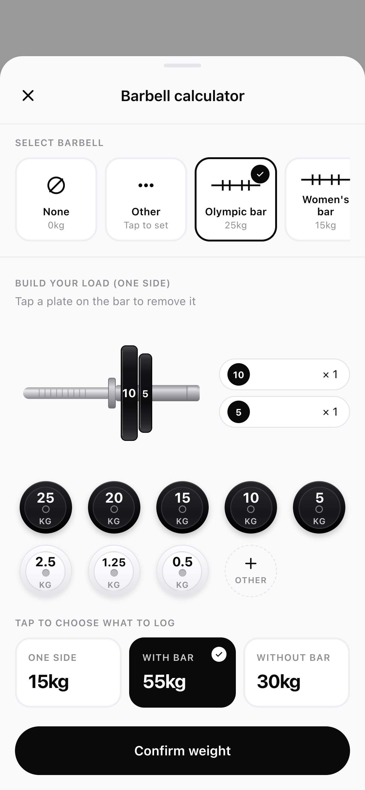
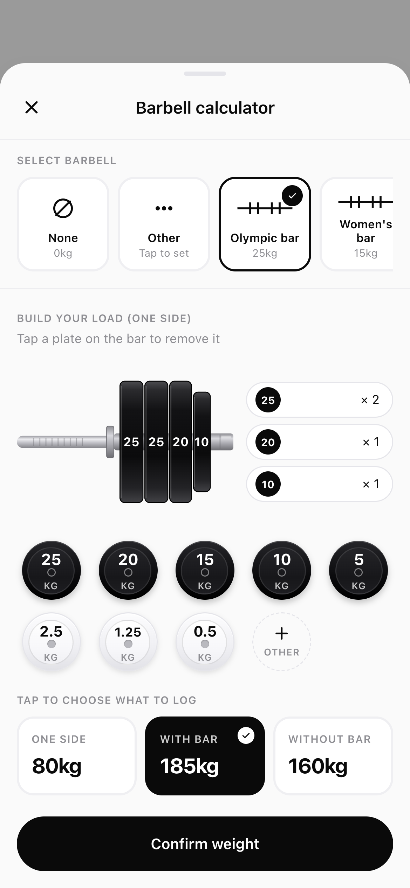

Never retype your
training plan again.
Reps is a free workout tracker that reads the PDF your coach gave you and turns it into a workout you log set by set.
- Free while in beta
- No feed, no followers
- Installs from the browser
How Reps fixes it
Three steps to your first logged set.
You import it once. After that there’s no retyping, no spreadsheets, and nothing to fight with mid-set.
-
Upload the PDF
Drop in the plan you were given. Reps pulls out the days, the exercises, the sets and the rep ranges.
-
Check what it read
It shows you what it found before anything is saved. Fix a name, a number or a whole day if it got one wrong.
-
Train
Every exercise opens on what you lifted last week. Log your sets, signal or no signal.
Bring your own plan
Your plan, without the typing.
Reps reads the plan you already have and lays it out as days you can tap into — in your coach’s own words, down to “Prime incline press”.
- Reads the days, exercises, sets and reps out of a PDF
- You know which machine they meant, not just which movement
- Supersets and giant sets stay as rounds


The calculator
Stop doing plate maths mid-set.
Tap the plates you loaded. Reps stacks them on the bar and hands you all three numbers at once.
- Olympic, women’s and easy bars — or set your own
- Plates down to 0.5 kg, plus any custom plate
- Tap a plate on the bar to take it back off
Prime leg extension
- Peg 1 20kg
- Peg 2 20kg
- Peg 3 10kg
Advanced gyms
Your machine numbers finally mean something.
20 kg on peg 3 is nothing like 20 kg on peg 1 — each peg is a different leverage. Reps saves a profile per machine, so your history holds up.
- Plate-loaded machines with up to eight pegs
- Cable machines remember the cam position too
- Your records compare like for like
Logged on your phone
- Bench press — 4 sets
- Incline dumbbell — 3 sets
- Cable fly — 3 sets
No signal required
No signal? Log it anyway.
Gyms are concrete boxes, and most trackers fall over in one. Reps works from the phone first and sends everything up when signal returns.
- Every set and note saves on the phone first
- Last week’s weights arrive before you leave home
- Checks afterwards that the workout really landed
Progress you can read
See whether the plan is working.
Where you are in the block, whether you turned up, and whether the numbers are going up.
- Estimated 1RM per lift, tracked across the block
- Body weight over 12 weeks, 6 months or a year
- A records board of every movement ever logged
Between sets
Less app, more workout.
No feed. No followers. No streak to protect. Every exercise opens on what you lifted last week with the rest timer already set from your plan, so you log the set and get back under the bar.
And the rest of it
-
Rest timer
Reads the rest your coach wrote into the plan.
-
Last time, filled in
Every exercise opens on what you lifted last week.
-
Rounds, not rests
Supersets cycle through instead of resting between.
-
Kg, lb or pin
Set per machine, for gyms that mix them.
-
Water
Bottles, glasses, cups or litres. Your call.
-
Steps
A daily count with your goal across the chart.
-
Body weight
Pick a day, type the number. That’s it.
-
Delete everything
One tap wipes it from the server and the phone.
Phase two
Build your own plan
Not everyone has a coach. Writing a plan inside Reps — days, exercises, sets and rep ranges — is what we’re building next.
Email me when it lands
Before you ask
The things people want to know before they hand a tracker their training. If yours isn’t here, ask from inside the app — every screen has a way to send a question.
What does it cost?
Nothing while Reps is in beta. It will move to a paid subscription once it is out of beta — you’ll hear about that well before it happens, not after. No ads either way.
How do I get in?
Ask for a place using the form at the bottom of this page. Reps is a small beta, so I send the link out myself rather than leaving signup open. Once you’re in it’s an email and a password — nothing else, and no social login to untangle later.
What if it reads my plan wrong?
You see everything it found before it saves. Any exercise or day can be edited on the spot, and you can re-upload whenever. If you still can’t get it right, send a request from inside the app and we’ll sort it out.
I already use another tracker.
Most are built for people who write their own workouts. If you were handed a plan, you’ve been doing data entry to use one.
What happens to my data?
It stays yours. Delete your account from Profile and every set, plan and weigh-in goes from the server and from the phone. There are no ads, so there is nothing to sell on either.
A small beta, on purpose.
I send the link out by hand, a few people at a time. Fill this in and you’ll hear from me within a day or two.